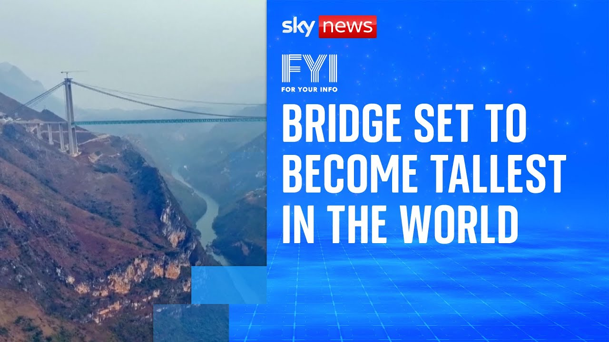

来B站一起耍【Global每日英语简报】
【你知道吗：这座桥即将成为世界最高】
Summary: A huge new bridge in southwest China is nearing completion and will become the world's tallest bridge, standing 625 meters above the river, dwarfing France's current record-holder.
摘要： 中国西南部一座巨型新桥即将竣工，将成为世界最高桥梁，高出河面625米，远超法国目前的纪录保持者。

⏱️ Estimated Reading Time: 1 min
A huge new bridge in southwest China is nearing completion.
中国西南部一座巨型新桥即将竣工。
It is set to become the world's tallest bridge when it's finished.
建成后将成为世界最高桥梁。
Towering at an epic 625 m above river level.
桥面高出河面625米，气势恢宏。
The Huaj Jang Grand Canyon Bridge is due to be completed in June.
花江大峡谷大桥预计将于六月完工。
It will dwarf its nearest competition.
它将远超其他竞争者。
The Milo Viaduct in France, which is currently the tallest bridge at 343 m.
法国米洛高架桥是目前最高的桥梁，高343米。
The new bridge is so high that the UK's tallest building, the Shard, could fit under it twice over with room to spare.
新桥高度惊人，英国最高建筑碎片大厦甚至能轻松放入桥下两次。
Now that's high.
真是高耸入云。